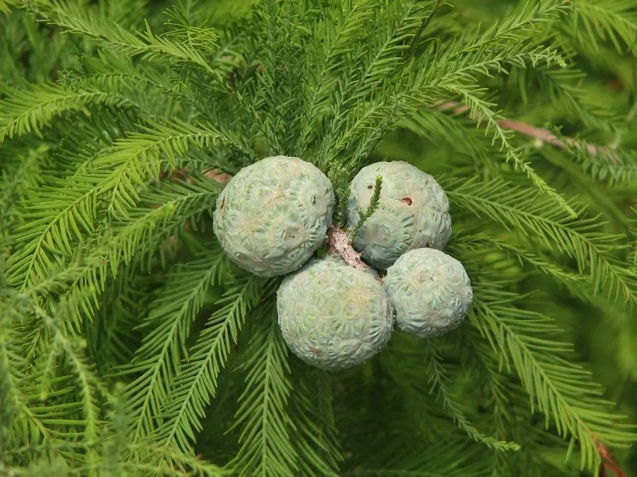

乔木 · 植物界
落羽杉 Taxodium distichum

原产北美的落叶针叶大乔木，秋叶红褐、冬季小枝连同叶片脱落如羽毛飘落，耐水湿，常生于河岸沼泽。
- 分类
- 门裸子植物门纲松柏纲目松柏目科柏科属落羽杉属
- 栖息环境
- 河流沿岸、沼泽湿地与低洼平地，喜水湿，耐涝
- 地理分布
- 原产北美洲东南部；中国长江流域及以南地区广泛引种栽培
- 保护级别
- 暂无评估；中国未列入国家重点保护野生植物名录
物种志
落羽杉为落叶针叶大乔木，高可达 50 m，树干通直，基部常膨大；树皮红褐色、呈长条片状剥落。叶片条形、扁平，在小枝上排成两列，状如羽毛，入秋转为红褐色，冬季连同小枝一同脱落，故得名“落羽杉”。雌雄同株，雄球花生于小枝顶端，雌球花生于枝顶；球果球形或卵圆形，成熟时褐色，种子具棱。
落羽杉原产北美洲东南部，多生于河流沿岸与沼泽湿地，耐水湿、耐涝，在水中可长出膝状呼吸根帮助根系呼吸，是湿地造林的优良树种。中国长江流域及以南地区广泛引种，常用于水岸绿化、防护林与公园景观，秋冬叶色红褐，观赏性强。木材轻软、耐腐，可供建筑与家具用；树形挺拔，也是优良的庭园树。落羽杉与同属的池杉外形相似，但落羽杉的小枝与叶片在冬季整体脱落。
形态与习性
- 株高可达 50 m，树干基部膨大
- 花期3–4 月，雌雄同株
- 球果成熟9–10 月，球形或卵圆形
- 光照喜光，不耐长期荫蔽
- 水分极耐水湿，可生于浅水中
- 土壤湿润的沙壤土或沼泽土
- 主要用途湿地造林、水岸绿化、建筑用材
趣味知识
- 落羽杉冬季叶片连同小枝一起脱落，落叶如羽毛飘下，因此得名。
- 落羽杉生于水中时会从根部向上长出膝状呼吸根，帮助根系呼吸。
- 落羽杉秋季叶色转为红褐色，是湿地与公园里重要的秋景观赏树种。
- 落羽杉原产北美，中国引种后成为水岸防护林与低洼地造林的主力。